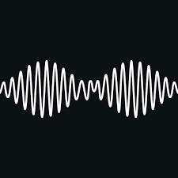
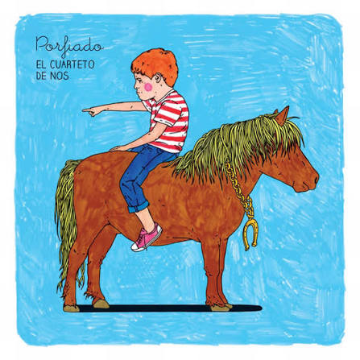

Mi Favorita
la musica es un gran hobbies
-

artics monkeys
Arctic Monkeys o AM es un cuarteto británico de indie rock, pop barroco, art rock y post-punk revival, formado en la ciudad inglesa de Sheffield, en 2002.Está integrado por el guitarrista principal y vocalista Alex Turner, el guitarrista Jamie Cook, el baterista Matt Helders y el bajista Nick O'Malley.
-

cuarteto de nos
El Cuarteto de Nos es una famosa banda de rock alternativo e [ hip-hop latino formada en Montevideo, Uruguay, en 1984. Destaca por sus letras llenas de ironía, humor negro, juegos de palabras y profunda crítica social o existencialista..
-
daddy yankee
cantante, compositor y empresario puertorriqueño ampliamente reconocido como el «Rey del Reguetón».
cada una de estas bandas representa el gusto musical que tengo siendo muchos pero estos son las mas representativos